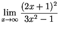
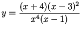
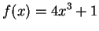
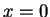
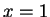
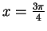
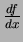
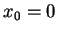
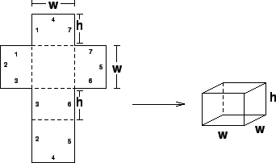

Name: Math 241: Calculus & Analytic Geometry A
Exam 3
November 27 2002
Were it not for Occam's Razor, which always demands simplicity, I'd be
tempted to believe that human beings are more influenced by distant causes
than immediate ones. This would be especially true of overeducated people,
who are capable of thinking past the immediate and becoming obsessed by the
remote.
- from ``Straight Man'' by Richard Russo
Instructions: Show all work to receive full or partial credit. All University rules and guidelines for student conduct are applicable.




to
.

.

if

.
